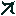
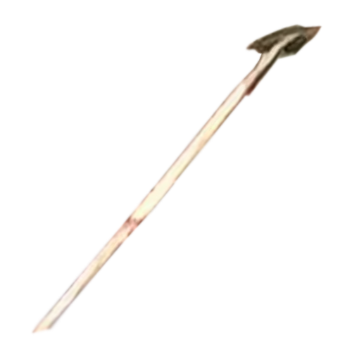
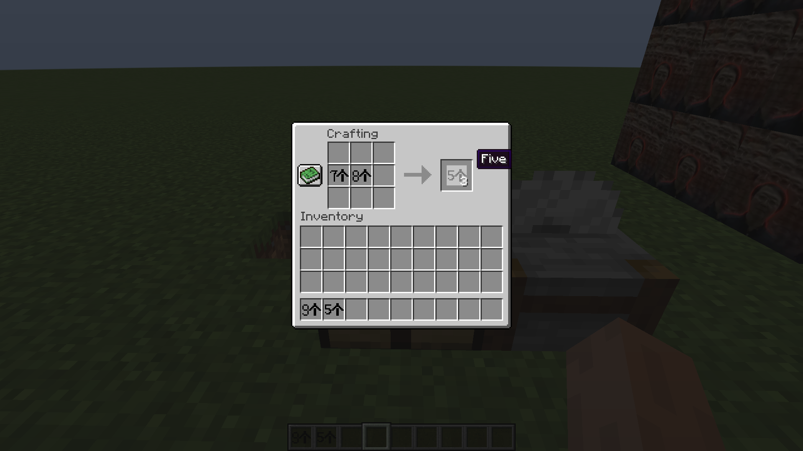
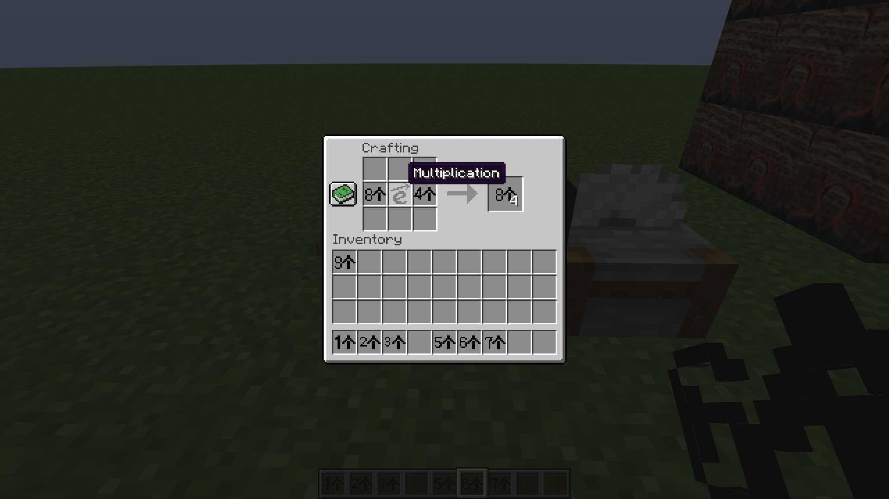
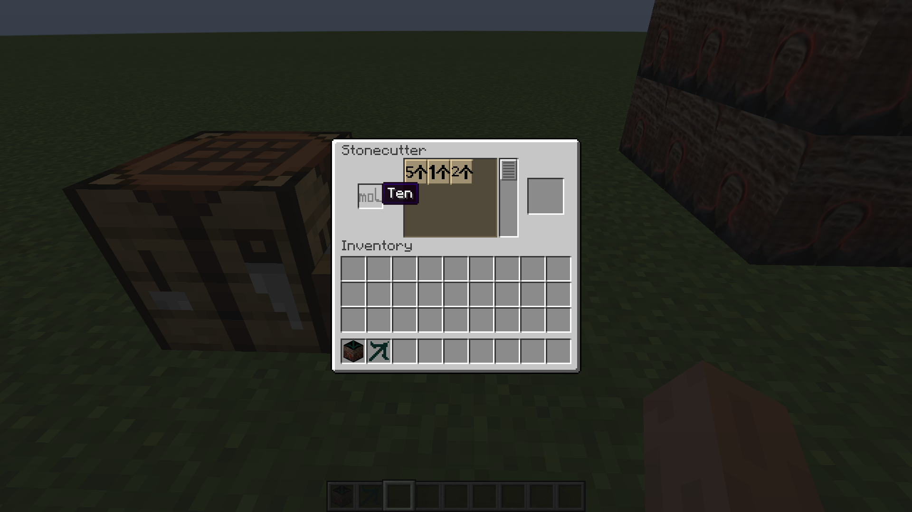
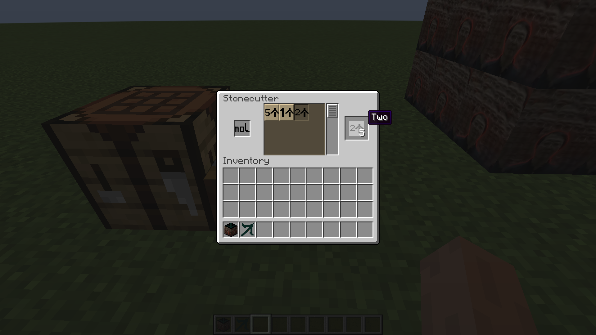
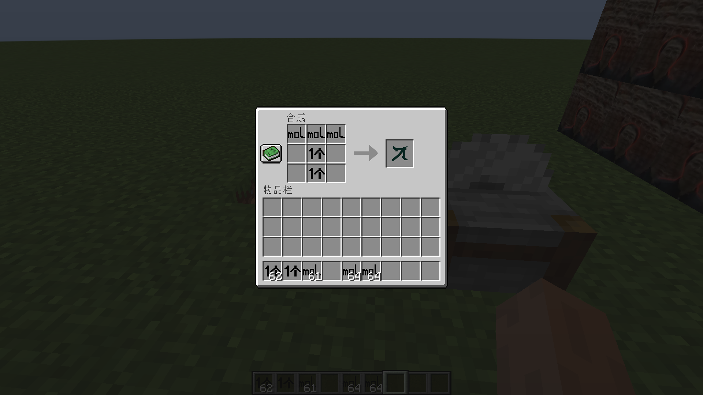
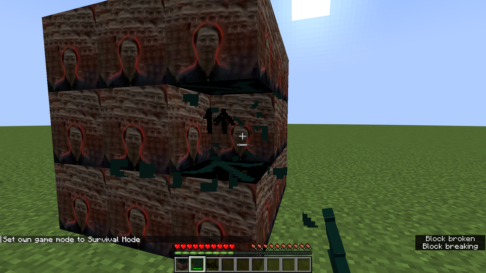
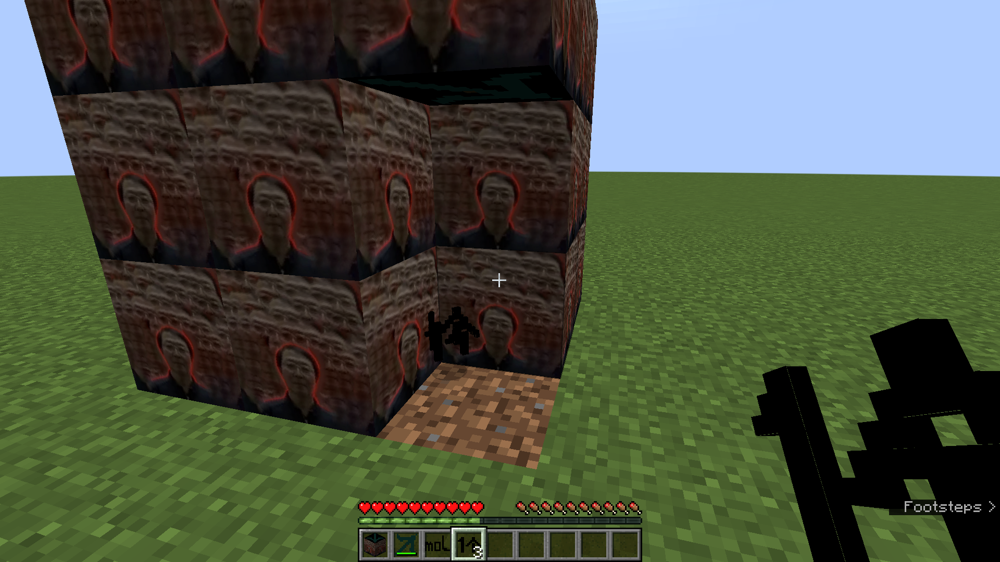

正在制作中的内容：
开方（物品）
老登实体（实体）
减法运算
乘方运算
开方运算
使用方法
- 将
odcounting-<Mod版本号>-forge-1.19.2.jar放入mods文件夹中 - 将
OldDenCounting-<对应Mod版本号>.zip数据包放入datapacks文件夹中
物品列表
数字物品：
物品
展示
含义
0个 0 1个 1 2个 2 3个 3 4个 4 5个 5 6个 6 7个 7 8个 8 9个 9 摩 10 个1 
-1 个2 -2 个3 -3 个4 -4 个5 -5 个6 -6 个7 -7 个8 -8 个9 -9 运算物品：
物品
展示
含义
额 乘法 额 除法 的 乘方 啊的 制作中...... 开方 其他物品：
物品
展示
信息
老登矿石 - 类型：岩石
- 生成高度：[-64, +32]
- 每区块矿石平均数：8
- 每组矿石的平均数量：8
- 掉落物：×3（老登矿石掉落物）
- 挖掘等级：3（钻石及以上）
- 所属标签：老登计数法
老登稿  - 类型：稿子
- 合成配方： 老登稿合成配方
- 挖掘等级：3（钻石）
效率：12（金质） - 附魔能力：10（钻石）
- 攻击伤害：5（钻石）
- 攻击速度：1.2（钻石）
- 耐久度：32（金质）
- 用于修复的物品：
- 防火：True
- 合成界面修复：False
- 所属标签：老登计数法
老登铲  - 类型：铲子
- 挖掘等级：1（石质）
- 效率：15（>金质）
- 附魔能力：14（铁质）
- 攻击伤害：4（>下界合金）
- 耐久度：200 （石质< 200 <铁质）
- 用于修复的物品：
- 防火：False
- 合成界面修复：False
- 所属标签：老登计数法
王卓明 - 类型：物品
- 用法：右击生老登实体制作中......
- 所属标签：老登计数法
加法运算
工作台无序合成
仅限两个加数的加法运算
如果计算结果小于等于10，则返回0~10的数字物品（图一）；如果计算结果大于10，则返回小于等于10的数字物品的最大乘数乘以对应个数（图二、图三）



减法运算
制作中......
乘法运算
工作台无序合成
仅限两个乘数的乘法运算
运算乘法时需要加入“乘号”以区分加法（下图）
如果计算结果小于等于10，则返回0~10的数字物品；如果计算结果大于10，则返回小于等于10的数字物品的最大乘数乘以对应个数

除法运算
切石机切分
放入切石机2~10的数字物品，切石机会将数字分为“整数因数”ד整数因数”的形式（放入切石机的物品表示被除数；切石机中的选项表示商，即表示要将被除数除成几；最后右侧得到商的个数为除数）


乘方运算
制作中......
开方运算
制作中......
新增配方
老登稿合成配方

新增方块
老登矿石

